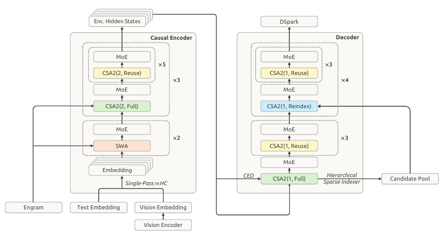
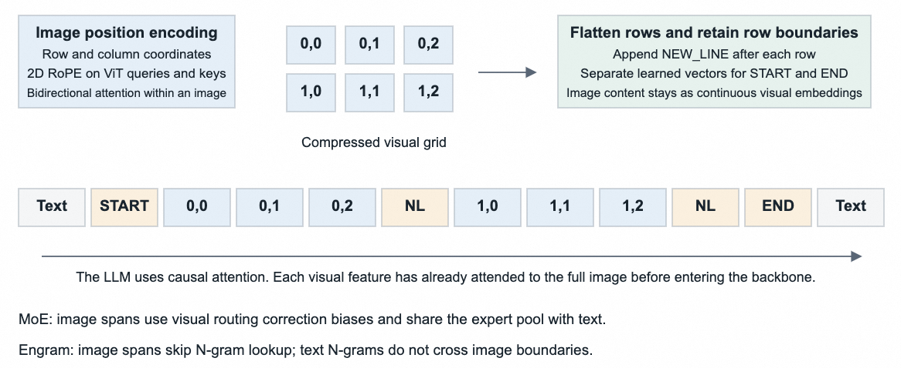
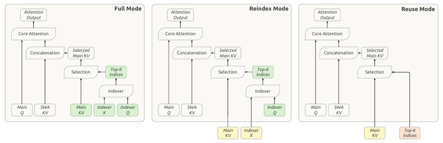
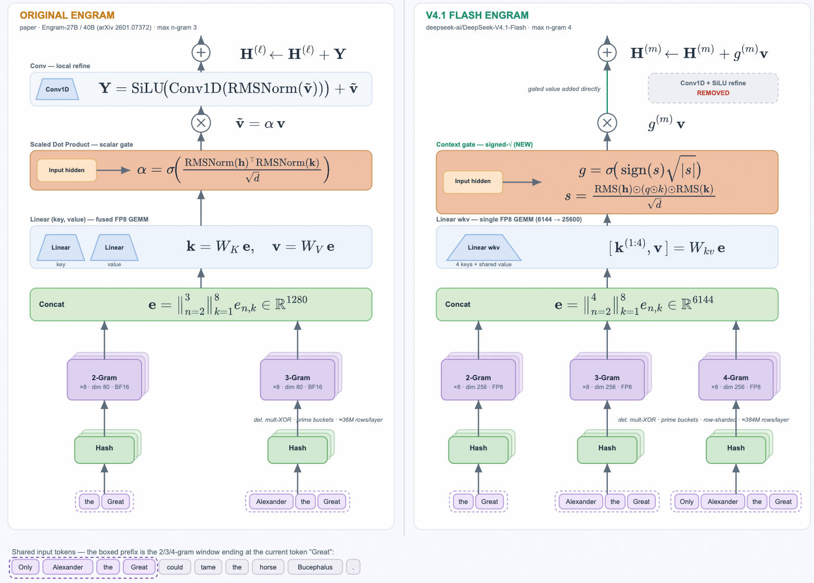
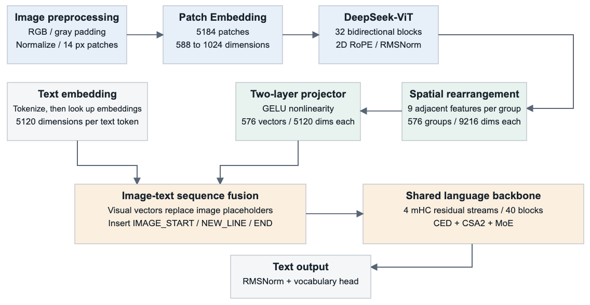
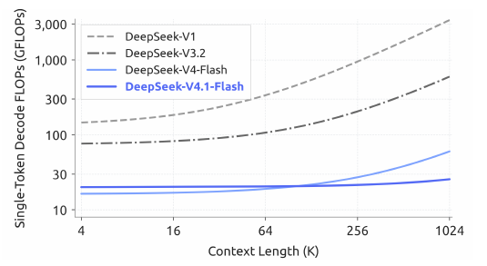
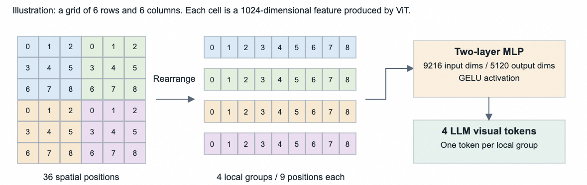

DeepSeek 架构演进：从 V1 到 V4.1 Flash
原创中文学习笔记：用自己的话总结三篇公开博文的技术要点，数学推导均为自写。不是原文翻译，建议对照原文阅读——shi3z《The Internal Architecture of DeepSeek v4.1 Flash》（V1→V4.1 演进史）· zartbot《DeepSeek-V4.1 Flash: Pushing the Limits of KV Cache Compression》（V4.1 Flash 技术报告解读）· 《详细解读 DSpark 投机解码的原理》（投机解码与 DSpark）· 官方技术报告 PDF。
DeepSeek 的全部架构史可以压缩成一句话：参数规模拼命膨胀，实际计算和访存拼命只取所需——不算不必算的，不存不必存的，不看不必看的。
数学推导
- 注意力机制的数学 —— MHA → MQA → GQA → MLA：KV cache 核算、解耦 RoPE、注意力折叠、mHC
- MoE 与负载均衡的数学 —— 路由公式、aux loss 的问题、aux-loss-free 偏置更新
- 稀疏注意力的数学 —— DSA / CSA / HCA / CSA2 / CED：indexer 打分、压缩比、跨层 KV 复用
- 投机解码与 DSpark —— 半自回归起草、置信度头与 STS 校准、硬件感知前缀调度器
- 投机解码的数学 —— 接受率 \(=1-\operatorname{TV}\)、无损性证明、期望长度的尾和公式、贪心调度的交换论证
目录
- Scaling Laws：训练的信仰
- V1：一碗白开水般的 Transformer
- GQA：K 和 V 何必人手一份
- V2：236B 参数，只算 21B —— MoE 与 MLA
- V3：671B 参数，只算 37B —— 负载均衡、MTP、FP8
- V3.2：DSA —— 只看值得看的 token
- V4：1M 上下文 —— CSA、HCA 与 mHC
- V4.1 Flash：把 KV cache 压缩推向极限
一、Scaling Laws：训练的信仰
Kaplan 等人 2020 年的论文给出三条幂律：\(L(N)\)、\(L(D)\)、\(L(C)\)——模型越大、数据越多、算力越多，loss 越低。OpenAI 与 Anthropic 把它当作技术路线的基石：砸钱、买卡、扫书。
但那是训练的故事。DeepSeek 玩的是另一局：推理。Scaling Laws 在推理侧的形态不是"把模型做大"，而是"把不必算的砍掉"。后面每一代架构，都是在这句话上再往前走一步。
二、V1：一碗白开水般的 Transformer
DeepSeek V1（7B / 67B）几乎就是 LLaMA 的翻版：decoder-only，7B 用标准 MHA，67B 用 GQA，上下文 4K，在 2T tokens 上训练。架构上毫无"DeepSeek 味"。
但它点出了此后全部优化的两个靶子：
- 计算瓶颈：模型变大，每一步前向都要把全网算一遍；
- 显存瓶颈：上下文变长，attention 计算量和 KV cache 按长度平方/线性爆炸。
三、GQA：K 和 V 何必人手一份
MHA 里每个 Q 头都配一套专属 K/V 头；MQA 走极端，所有 Q 头共享同一套 K/V，cache 下来了但精度常受损；GQA 取中间：把 Q 头分组，组内共享一套 K/V。32 个 Q 头分成 8 组，只存 8 套 K/V，KV cache 降到原来的 1/4～1/8，精度基本不掉。
核心直觉：Q 头需要各不相同（负责"问什么"），但 K/V 存的是"被问的内容"，没必要人手一份。→ KV cache 的完整核算见注意力机制推导
四、V2：236B 参数，只算 21B —— MoE 与 MLA
V2 一步跳到 236B 参数，但每 token 只激活 21B，上下文拉到 128K。官方口径：相对 V1 67B，KV cache 降低 93.3%，峰值生成吞吐提升 5.76 倍。靠两招：
- DeepSeekMoE：把 FFN 拆成一堆小专家，按 token 路由只激活少数几个。236B 的"容量"和 21B 的"计算量"解耦——图书馆有一百万本书，不必一次全读。
- MLA（Multi-head Latent Attention）：KV cache 的真正杀器。不存各头的 K/V 全量，只存一个约 512 维的压缩隐向量 \(c_t^{KV}\)（外加 64 维专管位置的键），合计每 token 576 维；推理时用 \(W_{UK}\)、\(W_{UV}\) 按需重建。RoPE 的位置旋转会破坏隐空间的线性，所以把内容键和位置键解耦存放。更进一步，矩阵结合律允许把重建矩阵预先折叠进 Q，推理时直接对 512 维隐向量打分，连 K/V 都不用物化。→ 完整推导见注意力机制
五、V3：671B 参数，只算 37B —— 负载均衡、MTP、FP8
V3 把 MoE 放大到 671B，每 token 实际计算 37B。新加入三样东西：
- Aux-loss-free 负载均衡：MoE 的老大难是 router 把 token 全塞给少数热门专家。传统做法是在 loss 里加一项均衡惩罚，但那会污染主目标（"答对题"和"均匀分流"两个目标打架）。V3 改用偏置收费制：给每个专家的选择分加一个动态偏置 \(b_i\)，拥堵的专家降偏置、空闲的加偏置；关键是输出加权时把 \(b_i\) 扔掉、只用原始亲和度——分流归分流，加权归加权，梯度互不干扰。→ 推导见 MoE 页面
- MTP（Multi-Token Prediction）：一次前向同时预测 \(t+1, t+2, \dots\)。训练时是辅助目标（提升表示质量），推理时天然做推测解码：猜对就省一次主模型前向，猜错就地回退。这招只在管线有空闲时有效，是给低 batch 交互推理准备的。
- FP8 训练：能压到 8 位的算子压到 8 位，显存减半、带宽减半、Tensor Core 跑满；代价是数值精度的精细化管理（哪些层必须高精度、缩放因子、 防溢出）。
六、V3.2：DSA —— 只看值得看的 token
上下文冲到 1M 时，attention 的"全量回看"成了笑话。DSA（DeepSeek Sparse Attention）的思路是搜索引擎式的：先用一个极轻的 indexer 召回候选，再对候选做精确 attention。
- indexer 只用 16～32 维、INT8 量化的键（对比主 attention 的 512+64 维），按 64 个 token 打包成 block 取均值代表；
- 1M tokens → 约 15625 个 block，一次点积扫描只要几百 KB，全在 SRAM 里几微秒搞定；
- 取 top-32 个 block（2048 tokens）+ 局部滑动窗口，交还 MLA 做精确计算；
- indexer 的训练信号来自蒸馏：让它的打分分布去拟合主 attention 的权重分布（KL 散度）。→ 完整管线见稀疏注意力推导
V2 的哲学是"把 KV 存小一点"，DSA 的哲学是"大部分根本不看"。
七、V4：1M 上下文 —— CSA、HCA 与 mHC
V4 把 1M 上下文变成实用配置（Flash 284B/13B，Pro 1.6T/49B——但到这个量级，参数数本身已没什么意义）。主角是两个新注意力：
- CSA（Compressed Sparse Attention）：先压缩、再稀疏。相邻 \(r=4\sim8\) 个 token 经因果卷积/门控投影压成一个 slot，序列先缩到 1/4～1/8，再用 indexer 做 top-K 检索。压缩 + 检索双管齐下。
- HCA（Heavily Compressed Attention）：更激进，\(r=64\sim128\)，把一整段压成一个 slot（用可学习的 cross-attention 做 perceiver 式池化，而不是粗暴平均）。1M tokens 只剩约 7812 个 slot——这个规模下直接做 dense 全量 attention，不需要检索，也就没有检索遗漏（needle-in-a-haystack 盲区）。
- 混合部署：浅层用滑动窗口保语法（2–4K），中层用 CSA 做放大镜（点查实体、变量），深层用 HCA 当望远镜（全局结构）——正好对应人读书时的精读、查索引、泛读。
- mHC（Manifold-Constrained Hyper-Connections）：残差连接从 \(y=x+F(x)\) 的单车道升级成 4 条并行残差流，混合矩阵经 Sinkhorn 迭代约束为近似双随机矩阵，防止信号失控放大。→ 见注意力机制页末节
八、V4.1 Flash：把 KV cache 压缩推向极限
zartbot 对官方技术报告的解读。V4.1 Flash 是 552B 的多模态 MoE，目标只有一个：KV cache 压到极限，手段是三处（CED 砍 prefill、CSA2 砍 KV、FP4 砍位宽）：

CSA2(2, Full) + MoE + CSA2(2, Reuse) ×5；右侧 Decoder：CSA2(1, Full) 起手 + 4 个 Reindex 块，压缩比全为 1。全网只有 4 个层真正产出 Main KV（kv_source_layers=[2,8,14,20]）——这正是 890 B/token 的来源。底部两条箭头是 CED 与层次化稀疏索引器。出处：zartbot 1.2 节
- CED（Causal Encoder-Decoder）：40 层中前 20 层是 Encoder、后 20 层是 Decoder；Decoder 的全局 KV 由 Encoder 末态 hidden 投影而来、跨层共享。长 prompt 的 prefill 只走前 20 层——prefill 激活 8B / decode 激活 16B，对输入主导的 agent 场景极划算。
- CSA2：在 CSA 基础上从三个维度压 KV——channel 维用 512 维隐向量统一表示各头 K/V；sequence 维 Encoder 把相邻 2 个位置并成 1 个 cache 条目；layer 维多层共享同一份全局 KV（全网只保留 3 份 Encoder cache + 1 份 Decoder cache）。再叠加 FP4 量化，每 token 约 890 字节（全局主 KV + indexer 口径）。
- Engram + DSpark：Engram 是条件记忆（n-gram 表格注入，挂在第 1 和第 14 层，两张表约 3.84 亿行）；DSpark 是推测解码——一次并行起草 5 个 draft 位置（
dspark_block_size=5），草稿侧是挂在主干第 37/38/39 层的 3 个 SWA-128 block、每层用 128 个路由专家取 Top-3 的小 MoE，读主干层入口处 4 条残差流的均值作为输入。难点不在起草模型本身，而在两处：并行起草让接受率沿块衰减（草稿模型一次前向产出全部位置 logits，每个位置都在对所有可能的前置 token 做边缘化），以及高并发下把长草稿整块丢给目标模型验证会挤占批处理容量、拉低系统总吞吐。解法是半自回归起草（重并行主干拿高起点 + 极轻串行头建模块内依赖）和置信度调度（模型自己预测每个草稿的存活概率，按真实硬件吞吐曲线决定验证多长）。→ 完整拆解见投机解码与 DSpark

engram_layer_ids=[1,14]）。注意注入点都刻意避开产出 Main KV 的 Full 层——否则会污染被下游 5 层共享的那份缓存。出处：zartbot 2.3.3 节
Linear wkv（4 个 key 共享一个 value），6144→25600 一次算完；③把门控从 \(\alpha=\sigma(\mathrm{RMS}(h)^{\top}\mathrm{RMS}(k)/\sqrt d)\) 换成带符号平方根的 \(g=\sigma(\mathrm{sign}(s)\sqrt{|s|})\)，并直接去掉 Conv1D+SiLU 的短卷积精炼——原文给的理由是它在推理软件栈复杂度与收益之间的取舍不划算。此外训练侧还用了动量更新 + Sinkhorn Balance 来优化 Engram embedding。出处：zartbot 2.4.2 节视觉分支：把一张图压成不超过 1024 个 token
V4.1 Flash 是多模态模型，图像走一条独立的短通路进入语言主干：
- 预处理：不做 OCR。解码成 RGB 后检查像素面积，过小则按比例放大；再把两条边向上对齐到
vision_patch_size=14的整数倍，补齐处填灰色。最后检查是否超vision_max_n_token=1024预算，超了就按长宽比重算更小的画布。 - ViT：32 层、隐维 1024。刻意不做 CLS 聚合，保留全部 patch 位置。每层先 RMSNorm 再算注意力、加残差，再 Norm 后走 SwiGLU 前馈、加残差。注意力用 2D RoPE 按原始行列坐标旋转 Q/K（不旋 V）。
- 空间重排 + 下采样：把 9 个相邻特征装进同一个宽向量，token 数降到 1/9。特征图网格不整除 3 时，在右侧与底部补零。
- 两层 MLP：投影到语言主干维度，插回文本序列。

vision_downsample_ratio=3 对应的 9 倍 token 削减。出处：zartbot 2.1 节

IMAGE_NEW_LINE，再加 IMAGE_START / IMAGE_END。这就是为什么论文说"支持约 1344×1344 分辨率"——它实际由 1024 的 token 预算卡住：一张恰好算出 1024 token 的图，因为要加标记会被缩到 964，加 31 个行标记和 2 个起止标记共 994 token。出处：zartbot 2.1 节图文 token 的表示分布不同，在 MoE 里可能形成不同的专家路由偏好；只平衡聚合负载会把各模态内部的不均衡掩盖掉。DeepSeek 的做法是：为文本与图像 token 各自维护一套 per-expert 修正偏置，路由时各用自己模态的偏置选专家，但加权输出时仍用原始路由分数；每步训练结束后按各自负载独立更新这两套偏置。结构与 aux-loss-free 偏置更新同源，只是按模态拆成了两份。→ 见 MoE 与负载均衡的数学
zartbot 还画了一张以 KV 为中心的递归 Transformer 视角：Decoder 层复用 Encoder 的 KV、只重写 Q——"改 Q、复用 KV"的递归结构。→ CSA2 与 CED 的核算见稀疏注意力页